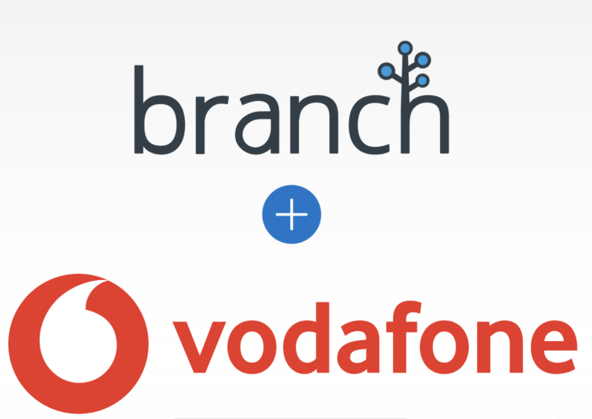
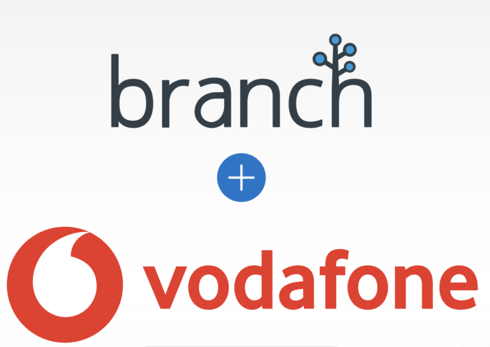

Deep Linking
Ensure your users always receive the best experience, no matter where they are when they click a link, to eliminate user drop-off and missed conversions.
Ensure your users always receive the best experience, no matter where they are when they click a link, to eliminate user drop-off and missed conversions.
Branch stitches together user activity, reliably measuring campaign performance everywhere it happens, regardless of the channel or platform.
Branch links can be used across the entire marketing lifecycle of the user journey - acquisition, activation, retention, revenue and referral